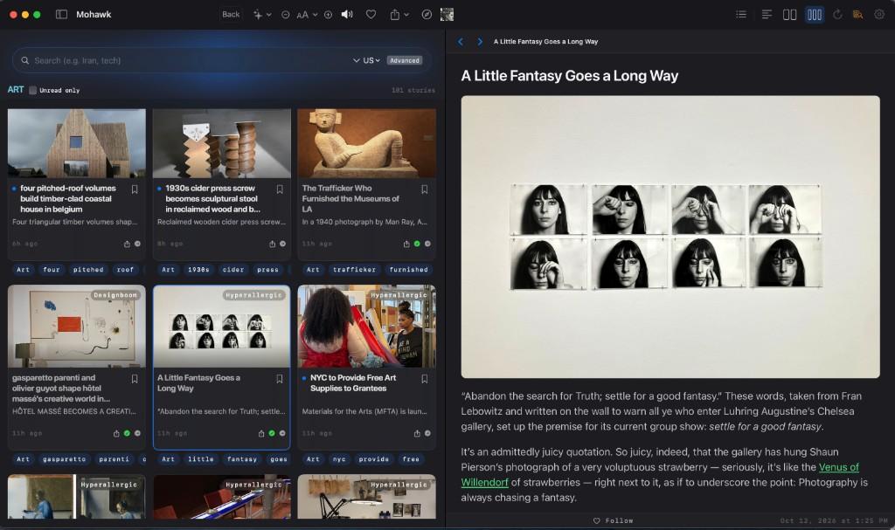
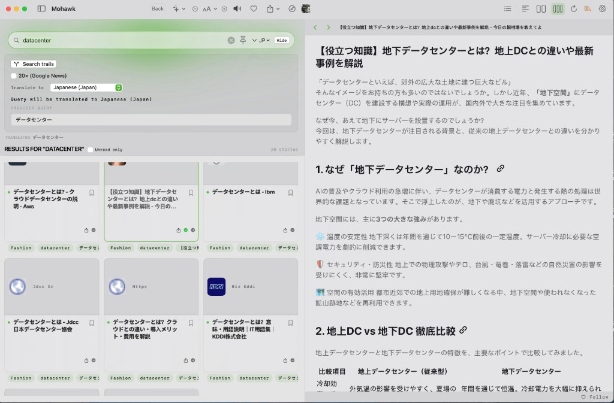
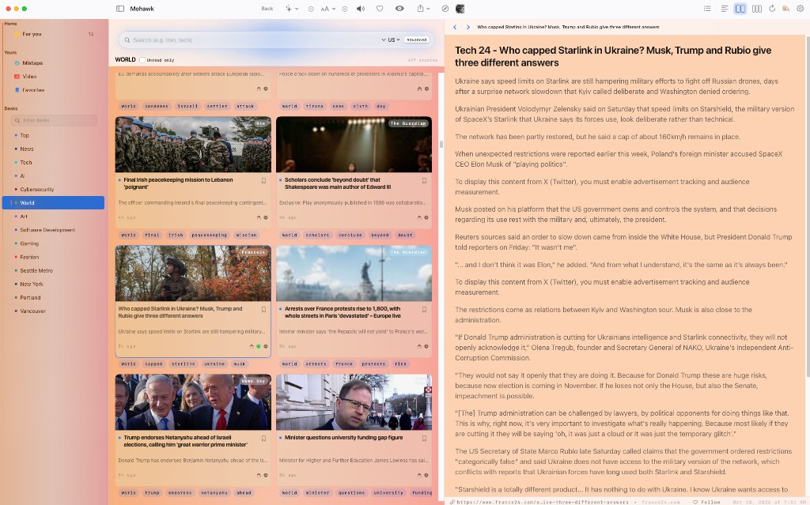
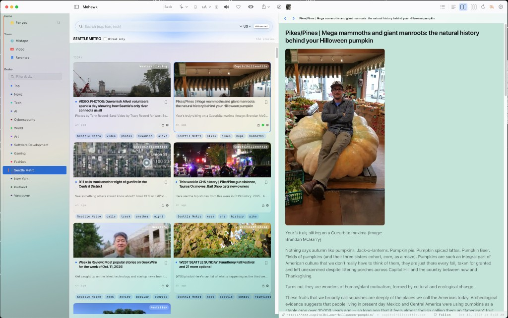
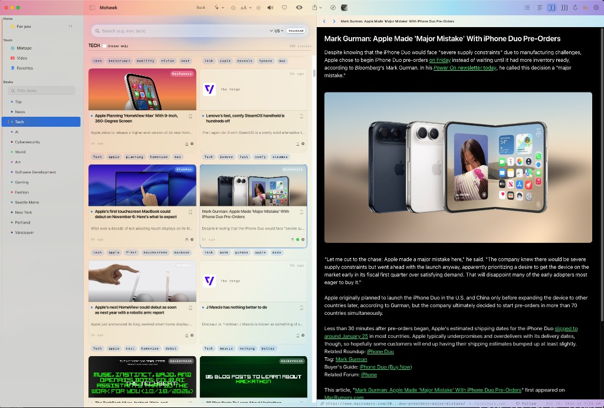
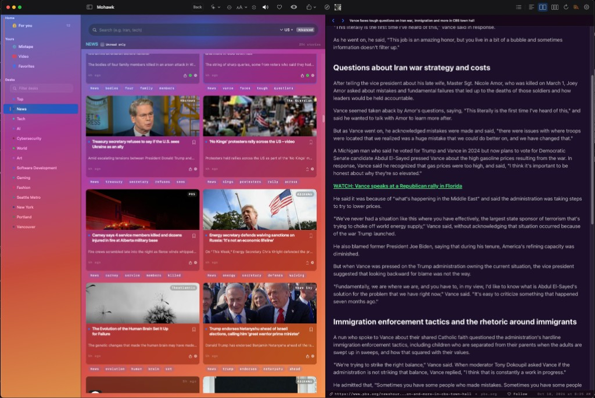

01
Search it.
Put a question in the bar and a region on it. What comes back is stories you can open.
 The question
The region
Stories you can open
The question
The region
Stories you can open
A news reader
Looking for something different? Search it, keep it, read it raw.
What it does
Mohawk is a news reader for the desk. You search for the story, you keep what earns a place, and you read the piece here.
01
Put a question in the bar and a region on it. What comes back is stories you can open.
The question
The region
Stories you can open
02
The desk is the pile you made. Save a piece. Follow the site while you are still on the article.
 The desk
Save a piece
Follow the site
The desk
Save a piece
Follow the site
03
The story opens here. Column, type, and light are yours. You are still in Mohawk at the end.
 The piece, as it ran
You finish here
The piece, as it ran
You finish here
On the glass
Mohawk is not a tab hoarder. It is a split view with opinions: grid on the left, the article on the right, and enough metadata that you can trust what you are about to read.
Art
Pick a desk — Art, News, Tech — and the grid fills with stories you have not opened yet. Tap one: the piece loads beside the pile, not on top of it. Unread dots, trail tags, timestamps. The chrome stays out of the way; the reading surface stays white.

Search
Type a topic once. Flip on search trails when you want depth, not just the headline. Set a region, choose a language, and Mohawk runs the query where the story actually lives — so datacenter can become データセンター before you commit to a long read. Results stay in the grid; the reader stays put.

Themes
Same reader. The room you are in decides the light.



